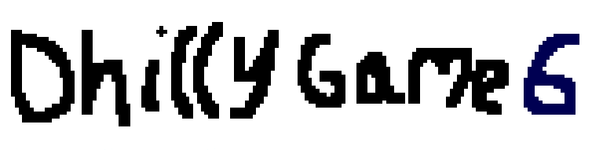

(Click on the game, read the controls, then press 'Z' to start)
Ice OS is a Scratch-based operating system simulation I've been maintaining as a hobby since 2018. It's taken many forms since then, ultimately reaching the current, "Ice OS 2024". As well as here, you can enjoy it on
Scratch and
Turbowarp.